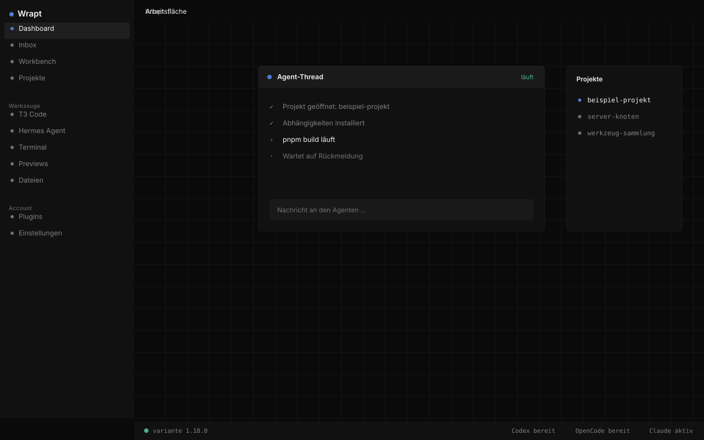
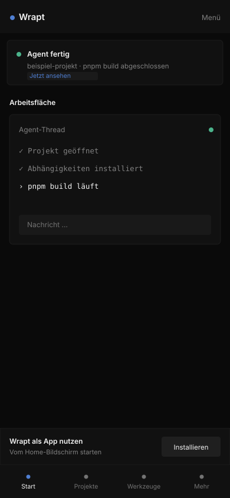
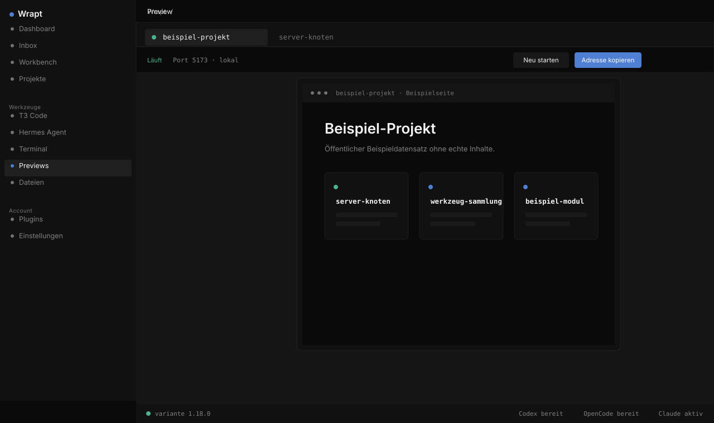
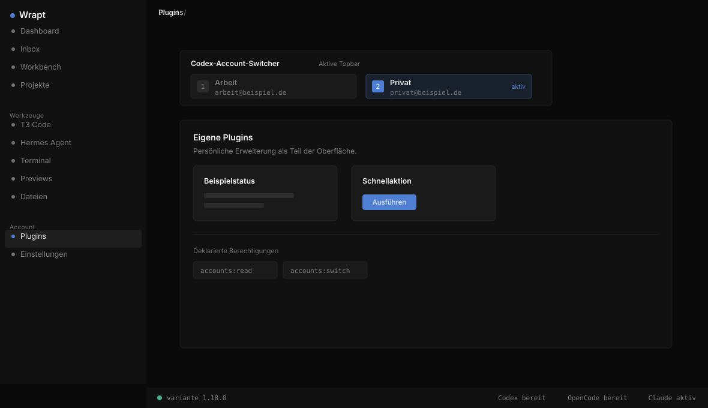

Ein Coding-Workspace für deine Agenten. Auf jedem Gerät derselbe Stand
Wrapt bündelt T3 Code, Hermes, Terminals, Previews und Plugins auf deinem eigenen Server. Projekte, Threads und Terminals laufen dort weiter, während du am Rechner, am Laptop oder am Handy weiterarbeitest.
Der Name spielt auf den Wrap an: Verschiedene Bestandteile, zusammen in einem Ganzen.
So funktioniert’s

Rechner und Handy greifen auf denselben Server zu. Projekte, Threads und der aktuelle Stand liegen dort, nicht auf einem einzelnen Gerät.
Entstehung
Angefangen hat es mit T3 Code. Ich habe darin gearbeitet und gemerkt, dass mir eine Umgebung fehlte, in der T3 Code, Hermes Agent und meine eigenen Werkzeuge zusammenlaufen, auf einem Server, der weiterläuft, wenn ich den Rechner zuklappe. Wrapt ist diese Umgebung. Sie läuft auf meinem eigenen Server und ist von mehreren Geräten aus erreichbar.
Werkzeuge
T3 Code, Hermes Agent und die Terminals liegen in derselben Oberfläche. Du öffnest einen Agent-Thread, schreibst eine Nachricht oder arbeitest direkt im Terminal, ohne zwischen Programmen zu wechseln. Was auf dem Server läuft, siehst du im Browser und greifst mit denselben Flächen darauf zu, egal an welchem Gerät du sitzt.
Previews und Server
Für Frontend-Arbeit startet Wrapt den Dev-Server und bindet die Vorschau in die Oberfläche ein. Du öffnest die laufende Seite im Panel oder kopierst die Adresse und lädst sie in einem eigenen Browser. Über Tailscale erreichst du Oberfläche und Vorschau auch von außerhalb deines Netzes. Das Dashboard zeigt dazu Ressourcen und aktive Prozesse des Servers.

Mobile Nutzung
Auf dem Handy nutzt du Wrapt als installierbare Web-App. Wenn ein Agent fertig ist, kommt ein Push-Hinweis. Du öffnest den Thread direkt und siehst den Stand, ohne den Rechner aufzuklappen.
Erweiterungen
Wrapt lässt sich um eigene Plugins ergänzen. Der Codex-Account-Switcher ist ein Beispiel: Er sitzt als Aktionsleiste in der Oberfläche, wechselt zwischen verwalteten Konten und zeigt seine deklarierten Berechtigungen. Eigene Erweiterungen bringen neue Flächen und Werkzeuge mit, ohne den Kern zu verändern.

Open Source
Wrapt ist Open Source und steht unter der MIT-Lizenz. Der gesamte Quellcode liegt auf GitHub. Du kannst ihn forken, an deine Umgebung anpassen und eigene Änderungen als Pull Request beisteuern.